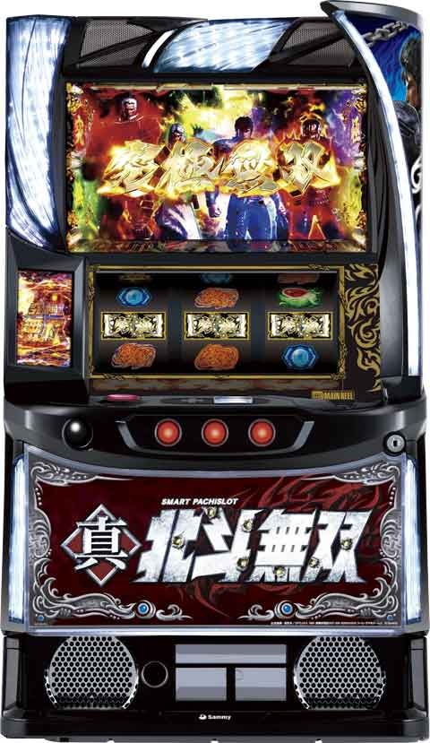
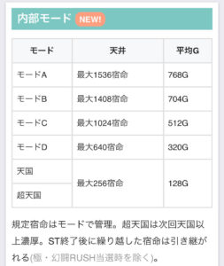
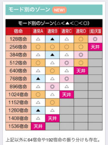
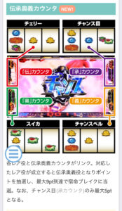
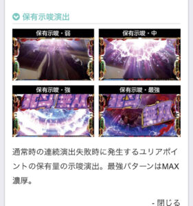
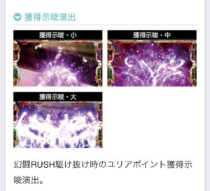

L真北斗無双

【天井情報】
1536宿命(カルマ)+α(平均770G) ボーナス当選
2宿命＝1Gくらいのペースで進む
【リセット判別】
据置時は液晶上に宿命(カルマ)が引き継がれている。
朝イチ 1021宿命+α(平均512G)に短縮
【有利区間について】
差枚+2100枚前後でスペシャルムービーに移行して、極・幻闘ラッシュ突入？
差枚プラス時に究極無双(4人集結)で有利切れ？差枚は関係ない？
狙い目
宿命(カルマ)を基準
【リセット狙い】
140宿命(実70G)
朝イチ連続駆け抜け回数別
1回 400宿命(実200G)
2回 500宿命(実250G)
3回 100宿命(実50G)
※駆け抜け時は4回目も消化
4回 0Gから
5回 200宿命(実100G)
※駆け抜け時は6回目も消化
6回 0Gから
※3.4回目は強い
【宿命間天井狙い】
860宿命(実430G)
※一撃1000枚以上後は60宿命ボーダー上げる。
※伝承奥義カウンタのpt数でボーダー調整。
連続駆け抜けの回数は、ST２連以上後を起点で見る。
連続駆け抜け回数別(リセからユリアボーナス履歴あり)
1-2回 700宿命(実350G)
3回 500宿命(実250G)
4回 800宿命(実400G)
5回 200宿命(実100G)
※5回目駆け抜け時は6回目も消化
6回 0から
連続駆け抜け回数別(リセからユリアボーナス履歴なし)
1-2回 600宿命(実300G)
3回 100宿命(実50G)
4回 600宿命(実300G)
5回 200宿命(実100G)
※5回目駆け抜け時は6回目も消化
6回 0から
※リセ以外でかつユリアボーナス履歴無しは3回目が強い
ユリアボーナス見抜き方は下記の記事
【ゾーン狙い】
256宿命ゾーン
前回AT500枚未満 210宿命から
前回AT500枚以上 230宿命から
128宿命ゾーン 110宿命から
天国ループが少しありそう。
前回128宿命当選時は100宿命から256宿命のゾーンまで？
【ユリアポイント狙い】
保有ポイント示唆強以上は解放まで打った方が良さそう？
獲得ポイント示唆は仮天井？(3.4連続駆け抜け後)時に大が出やすいかもしれない。
その場合は当選まで打った方が良さそう？
【伝承奥義カウンタ狙い】
カウンタが進んでるほど宿命ブレイクに行きやすい。
ボーダー調整は現状不明だが明らかに進んでない時(全て2個以下など)は100宿命くらいボーダー上げた方が良さそう。
逆に2箇所以上到達近い(5pt以上)ならボーダー下げたり出来そう。
ボーダー調整目安
合計pt
5pt未満 +100宿命
6-10pt +30宿命
11-15pt +0宿命
16pt 以上 -60宿命
【北斗無想カウンタ狙い】
ボーダーに影響無さそう
【有利区間切れ狙い】
有利切れのタイミングがハッキリしないため原則狙えない。
【モードD狙い】
256宿命ゾーンで激闘ROADに行かない場合はモードD濃厚。
256から275宿命で非前兆の台は640宿命ゾーンまで
参考元 期待値くまパパ
【モードA天井駆け抜け後狙い】
モードA天井(1536宿命)で駆け抜け後は256宿命までに結構当選する。非当選の報告複数あり。
店データ機からモードA天井は見抜けないため目視で確認出来た場合のみ狙える。
どこかのnoteで発信されてる様だけど出所不明。
やめ時
ST終了後やめ。
5車星ステージは規定宿命が近い可能性あり？
その他
内部モード

モード別のゾーン

伝承奥義カウンタ

ユリアポイント示唆関連


参考元
基本情報
- メーカー: サミー
- 機械割: 97.9% 〜 114.9%
- 導入開始日: 2024年07月08日（月）
- ゲーム性概要: 通常時は規定の宿命に到達すればボーナスに当選。 ボーナス後は30G＋αのST「幻闘ラッシュ」に突入して、レア役で抽選される宿星バトルに勝利すればボーナスかつ40G＋αのST「真・幻闘ラッシュ」へ昇格する。 「真・幻闘ラッシュ」には幻闘or宿星という2種類のバトルがあり、幻闘バトル勝利時はST継続、宿星バトルに勝利するとSTが50G＋αに増加。宿星バトル勝利後、再度宿星バトルに勝利すれば「究極無双」を経由して、77G＋αの超強力ST「極・幻闘ラッシュ」へ突入する。 ボーナス中はSTが有利になる伝授キャラの獲得を抽選するので、ボーナス中のヒキも重要だ！


打ち方
打ち方・小役
通常時・ST中の打ち方（小役狙い）
「最初に狙う絵柄」

左リール上段付近に北斗無双を目押し。押し順ナビ発生時はナビ通りに消化しよう。
「チェリー停止時」
成立役…チェリーor無双チェリー

「北斗無双下段停止時」
成立役…ハズレorリプレイorベルor無双目orチャンスベルorチャンス目

「スイカ上段停止時」
成立役…スイカorチャンス目

中&右リールにスイカを狙う（いずれも北斗無双目安でOK）。
「スイカ中段停止時」
成立役…無双スイカ

中＆右リールにスイカを狙う（いずれも北斗無双目安でOK）。
「レア役の停止形」

「激アツ目」

朝イチのみ激アツ目が出現する可能性あり。ユリアボーナス直行のプレミアムフラグ。
ボーナス中の打ち方
「基本はナビ通りに消化でOK」

ナビなし時はレア役の可能性があるので、左リールに北斗無双を狙おう。
「狙え発生時」


弱無双目は緑以上、強無双目は赤以上の伝授キャラを獲得できる。
変則押しはNG

通常時、押し順ナビなし時は左リール第1停止での消化を推奨する。
解析情報通常時
小役関連
［設定差ナシ］スイカ以外のレア役確率
| 役 | 確率 |
|---|---|
| チェリー | 1/99.9 |
| チャンス目 | 1/199.2 |
| チャンスベル | 1/59.9 |
| 無双目 | 1/9.1～1/299.3 |
| レア役合算 | 1/6.6～1/22.2 |
※無双目高確率中の無双目確率が1/9.1
無双チェリー・無双スイカの恩恵
| 状況 | 恩恵 |
|---|---|
| 通常時 | 宿命超バースト突入 |
| ボーナス中 | 伝授キャラ「南斗最後の将」獲得 |
どちらが成立しても恩恵は同じ。強力な恩恵を受けることができる。
無双目・宿命ブレイク当選率
| 内部状態 | 当選率 |
|---|---|
| 通常 | 25.0% |
| 高確 | 50.0% |
モード
モード概要
通常時は6つのモードが存在し、滞在モードに応じて規定宿命到達時のボーナス当選期待度や天井が異なる。最大宿命は1536で、宿命獲得の特化ゾーンもあり。
モードごとの天井
| モード | 天井 |
|---|---|
| 通常A | 1536宿命 |
| 通常B | 1408宿命 |
| 通常C | 1024宿命 |
| 通常D | 640宿命 |
| 天国 | 256宿命 |
| 超天国 | 256宿命 |
モード別・ボーナス当選期待度
| 宿命（平均ゲーム数） | 通常A | 通常B | 通常C |
|---|---|---|---|
| 128宿命（64G） | △ | ▲ | △ |
| 256宿命（128G） | 〇 | 〇 | 〇 |
| 384宿命（192G） | △ | ▲ | △ |
| 512宿命（256G） | 〇 | △ | ◎ |
| 640宿命（320G） | △ | 〇 | △ |
| 768宿命（384G） | ▲ | △ | ◎ |
| 896宿命（448G） | △ | ◎ | △ |
| 1024宿命（512G） | 〇 | △ | 天井 |
| 1152宿命（576G） | △ | 〇 | |
| 1280宿命（640G） | ▲ | △ | |
| 1408宿命（704G） | △ | 天井 | |
| 1536宿命（768G） | 天井 | ||
| 宿命（平均ゲーム数） | 通常D | 天国 | 超天国 |
| 128宿命（64G） | 〇 | ◎ | ◎ |
| 256宿命（128G） | 〇 | 天井 | 天井 |
| 384宿命（192G） | ◎ | ||
| 512宿命（256G） | 〇 | ||
| 640宿命（320G） | 天井 |
768宿命（384G）
896宿命（448G）
1024宿命（512G）
1152宿命（576G）
1280宿命（640G）
1408宿命（704G）
1536宿命（768G）
※期待度…△＜▲＜◯＜◎
モードの特徴
| 項目 | 内容 |
|---|---|
| 設定変更時 | 通常C以上濃厚（機械割100%超） |
| 256宿命以内選択率 | 約40%（全モードのトータル） |
| 超天国移行時 | 次回も天国以上濃厚（※） |
| その他 | 64宿命や192宿命が規定宿命になる可能性あり |
| その他 | 余った宿命は次回に持ち越し（※） |
※極・幻闘ラッシュ当選時を除く
「宿命ポイント」

液晶中央下部の赤い数字が宿命ポイント。特化ゾーンなどで規定ポイントを超過した分はST終了後に持ち越されるため、ムダにはならない（極・幻闘ラッシュに到達した場合を除く）。
規定宿命として選択される宿命
| No. | 宿命 |
|---|---|
| 1 | 64宿命 |
| 2 | 128宿命 |
| 3 | 192宿命 |
| 4 | 256宿命 |
| 5 | 384宿命 |
| 6 | 512宿命 |
| 7 | 640宿命 |
| 8 | 768宿命 |
| 9 | 896宿命 |
| 10 | 1024宿命 |
| 11 | 1152宿命 |
| 12 | 1280宿命 |
| 13 | 1408宿命 |
| 14 | 1536宿命 |
規定宿命に選択される可能性があるのは、上記の14個所。滞在しているモードごとにフェイク前兆（激闘ロード）の発生率も変化する。設定変更時は内部的にランダムな宿命が加算されるため、上記の宿命数とは異なる宿命で前兆に突入する可能性あり。
ブルーセブンモード性能
| 項目 | 内容 |
|---|---|
| 移行契機 | 有利区間移行時・ST終了時の抽選 |
| 恩恵 | ST中のボーナスがすべて （真or極）北斗無双ボーナスになる |
| 滞在時の機械割 | 設定1でも100%超 |
| その他 | 高設定ほど移行しやすい 有利区間移行時のレア役は移行のチャンス |
有利区間移行時・ST終了時のブルーセブンモード移行率
| 設定 | 移行率 |
|---|---|
| 1 | 0.7% |
| 2 | 0.7% |
| 3 | 0.8% |
| 4 | 1.0% |
| 5 | 1.1% |
| 6 | 1.2% |
有利区間移行時のレア役・ブルーセブンモード移行率
| 役 | 移行率 |
|---|---|
| 無双目 | 10.2% |
| チャンスベル | 10.2% |
| スイカ・チェリー | 20.3% |
| チャンス目 | 33.6% |
ブルーセブンモードは有利区間移行時とST終了時の設定に応じて抽選で移行するのが基本だが、有利区間移行時にレア役を引いた場合は、設定不問でブルーセブンモード移行が追加抽選される。
伝承奥義カウンタ＆北斗無双カウンタ
伝承奥義カウンタ概要

液晶左右のカウンタに、対応役成立時に1pt以上を蓄積。各カウンタには規定ポイントが設定されていて、最大9pt獲得（チャンス目は最大5pt）で宿命ブレイクへ突入する。カウンタが帯電すると宿命ブレイクの前兆がスタート。
伝承奥義カウンタの対応役
| カウンタ | 対応役 |
|---|---|
| 伝（左上） | チェリー |
| 承（右上） | チャンス目 |
| 奥（左下） | スイカ |
| 義（右下） | チャンスベル |
伝承奥義カウンタごとの特徴
| カウンタ | 特徴 |
|---|---|
| 伝（左上） | 偶数ポイントが好機、9pt到達で上位宿命ブレイクに期待 |
| 承（右上） | 全ポイントが好機、5pt到達で上位宿命ブレイクに期待 |
| 奥（左下） | 奇数ポイントが好機、9pt到達で上位宿命ブレイクに期待 |
| 義（右下） | 6ptが好機、6pt以外は上位宿命ブレイクに期待 |
※設定変更後、電源OFF/ON後を除く
ポイントごとの期待度
| ポイント | 伝（左上） | 承（右上） | 奥（左下） | 義（右下） |
|---|---|---|---|---|
| 1pt | 〇 | 〇 | ||
| 2pt | 〇 | 〇 | ||
| 3pt | 〇 | 〇 | ||
| 4pt | 〇 | 〇 | ||
| 5pt | ◎ | 〇 | ||
| 6pt | 〇 | 〇 | ||
| 7pt | 〇 |
8pt
※○…宿命ブレイクのチャンス、◎…上位宿命ブレイクのチャンス
北斗無双カウンタ概要

液晶下部左右のHOKUTOMUSOUの文字は、リプレイ成立ごとに一文字ずつ点灯。全部点灯すると無双目高確率へ突入する。
「無双目高確率」

継続期待度の異なる複数の状態があり、エフェクトの色で継続期待度を示唆している。
無双目高確率
無双目確率が1/9.1にアップした状態で、ショート・ミドル・ロングの3種類が存在。種類によって転落率が異なる。 無双目高確率中に再び北斗無双カウンタがMAXになった場合、ミドルやロングへの昇格が抽選される。
無双目高確率性能
| 項目 | 内容 |
|---|---|
| 移行契機 | 北斗無双カウンタMAX |
| 種類 | ショート＜ミドル＜ロング |
| 無双目確率 | 1/9.1 |
| 転落抽選 | 種類に応じて無双目 or レア役成立を除く全役で抽選 |
| その他 | 無双目高確率中に北斗無双カウンタが MAXになった場合はミドルやロングへの昇格抽選 |
| その他 | 宿命ブレイク中や幻闘/宿命バトル中は転落ナシ |
「無双目高確率表示の補足」

液晶の“無双高確率”の表示と無双目高確率は完全リンクではなく、内部的に転落後も数ゲーム間表示が続くことがある。本来、宿命ブレイク中などは転落抽選はおこなわれないのだが、転落後も“無双高確率”の表示が続いていた状態で宿命ブレイクなどに当選した場合に限り、表示が消えることがある。
規定伝承奥義ポイント振り分け
| ポイント | 伝 （チェリー） | 承 （チャンス目） | 奥 （スイカ） | 義 （チャンスベル） |
|---|---|---|---|---|
| 1pt | 3.1% | 18.8% | 20.3% | 0.4% |
| 2pt | 25.0% | 18.8% | 3.1% | ー |
| 3pt | 3.1% | 18.8% | 21.9% | 0.4% |
| 4pt | 28.1% | 18.8% | 3.1% | ー |
| 5pt | 3.1% | 25.0% | 21.9% | 0.4% |
| 6pt | 25.0% | ー | 3.1% | 87.5% |
| 7pt | ー | ー | 14.1% | 0.4% |
| 8pt | ー | ー | ー | 0.4% |
| 9pt | 12.5% | ー | 12.5% | 10.5% |
※赤字のポイントで当選した場合は上位宿命ブレイクor宿命超バースト濃厚（赤字以外の箇所でも当選の可能性あり）
設定変更後や複数ポイント獲得時など、見た目上のポイントと実際のポイント数が異なるケースもある。
宿命ブレイク
宿命ブレイク概要

宿命ポイント獲得の特化ゾーンで、毎ゲームの成立役に応じて宿命獲得を抽選。レア役成立時に出現する中ボスは獲得宿命が優遇されているだけでなく、撃破時の一部で宿命ブレイクをストックすることもある。継続ゲーム数が長く宿命獲得期待値の高い上位宿命ブレイクも存在する。
宿命ブレイク性能
| 項目 | 内容 |
|---|---|
| 突入契機 | 伝承奥義カウンタMAX、無双目での抽選 |
| 継続ゲーム数 | 6G＋α（上位は10G＋α） |
| 消化中の抽選 | 毎ゲームの小役で宿命を獲得 |
| 消化中の抽選 | レア役契機で出現する中ボス撃破で30宿命以上 |
| 消化中の抽選 | 中ボス撃破時に小役成立で恩恵アップ |
| 消化中の抽選 | 中ボス撃破時に宿命ブレイクストックの可能性あり |
中ボスごとの上乗せ宿命期待度
| 中ボス | 期待度 |
|---|---|
| スペード | 低 |
| ハート | ↓ |
| 牙大王 | ↓ |
| デビルリバース | 高 |
［上位宿命ブレイク］

突入画面が赤なら上位宿命ブレイク。継続ゲーム数が10G＋αにアップかつ、毎ゲーム10宿命以上を獲得できる。
［中ボス］

撃破時の一部で宿命ブレイクをストック。ストック獲得時は前兆を経由して宿命ブレイクに突入する。
宿命ブレイクのストック抽選
通常時は、毎ゲーム宿命ブレイクのストックを抽選（伝承奥義カウンタによる抽選とは別の抽選）。ただし、当選＝即放出されるわけではなく、宿命ブレイク終了後に前兆を経由して放出される。高設定ほど当選確率が高いので、連続して宿命ブレイクに突入すると高設定に期待できる。
上乗せ宿命振り分け
毎ゲームの成立役に応じて上乗せされる宿命数が変化。レア役成立時は中ボスが出現し、上乗せ宿命がアップする。牙親父とデビルリバースが出現している場合、成立役による抽選とは別に、追加での宿命上乗せ抽選もおこなわれる。
［宿命ブレイク・中ボス 非滞在 時］ 上乗せ宿命振り分け
| 宿命 | ハズレ目 | ベル・リプレイ | 無双目 |
|---|---|---|---|
| ＋5 | 100% | ー | ー |
| ＋10 | ー | 93.8% | ー |
| ＋20 | ー | 4.7% | ー |
| ＋30 | ー | 0.8% | 100% |
| ＋40 | ー | ー | ー |
| ＋50 | ー | 0.4% | ー |
| ＋60 | ー | ー | ー |
| ＋70 | ー | ー | ー |
| ＋80 | ー | ー | ー |
| ＋90 | ー | ー | ー |
| ＋100 | ー | 0.4% | ー |
| 宿命 | チャンスベル | チェリー・スイカ | チャンス目 |
| ＋5 | ー | ー | ー |
| ＋10 | ー | ー | ー |
| ＋20 | ー | ー | ー |
| ＋30 | 100% | 87.5% | ー |
| ＋40 | ー | ー | ー |
| ＋50 | ー | 12.5% | 87.5% |
| ＋60 | ー | ー | ー |
| ＋70 | ー | ー | 9.4% |
| ＋80 | ー | ー | ー |
| ＋90 | ー | ー | ー |
| ＋100 | ー | ー | 3.1% |
［上位宿命ブレイク・中ボス 非滞在 時］ 上乗せ宿命振り分け
| 宿命 | ハズレ目 | ベル・リプレイ | 無双目 |
|---|---|---|---|
| ＋5 | ー | ー | ー |
| ＋10 | 100% | ー | ー |
| ＋20 | ー | 93.8% | ー |
| ＋30 | ー | 4.7% | ー |
| ＋40 | ー | 0.8% | ー |
| ＋50 | ー | ー | 87.5% |
| ＋60 | ー | 0.4% | ー |
| ＋70 | ー | ー | 12.5% |
| ＋80 | ー | ー | ー |
| ＋90 | ー | ー | ー |
| ＋100 | ー | 0.4% | ー |
| 宿命 | チャンスベル | チェリー・スイカ | チャンス目 |
| ＋5 | ー | ー | ー |
| ＋10 | ー | ー | ー |
| ＋20 | ー | ー | ー |
| ＋30 | ー | ー | ー |
| ＋40 | ー | ー | ー |
| ＋50 | 87.5% | 50.0% | ー |
| ＋60 | ー | ー | ー |
| ＋70 | 12.5% | 37.5% | ー |
| ＋80 | ー | ー | ー |
| ＋90 | ー | ー | ー |
| ＋100 | ー | 12.5% | 100% |
［宿命ブレイク］中ボス当選時の振り分け
| 中ボス | 無双目 | チャンス ベル | チェリー スイカ | チャンス目 |
|---|---|---|---|---|
| スペード | 68.8% | 68.8% | 50.0% | ー |
| ハート | 25.0% | 25.0% | 37.5% | ー |
| 牙親父 | 5.9% | 5.9% | 10.9% | 87.5% |
| デビルリバース | 0.4% | 0.4% | 1.6% | 12.5% |
［宿命ブレイク・中ボス 滞在 時］ 上乗せ宿命振り分け スペード
| 宿命 | ハズレ目 | ベル・リプレイ | 無双目 |
|---|---|---|---|
| なし | 100% | ー | ー |
| ＋10 | ー | ー | ー |
| ＋20 | ー | 75.0% | ー |
| ＋30 | ー | ー | ー |
| ＋40 | ー | 18.8% | 87.5% |
| ＋50 | ー | ー | ー |
| ＋60 | ー | ー | ー |
| ＋70 | ー | 6.3% | 12.5% |
| ＋80 | ー | ー | ー |
| ＋90 | ー | ー | ー |
| ＋100 | ー | ー | ー |
| 宿命 | チャンスベル | チェリー・スイカ | チャンス目 |
| なし | ー | ー | ー |
| ＋10 | ー | ー | ー |
| ＋20 | ー | ー | ー |
| ＋30 | ー | ー | ー |
| ＋40 | 87.5% | ー | ー |
| ＋50 | ー | ー | ー |
| ＋60 | ー | ー | ー |
| ＋70 | 12.5% | 100% | 100% |
| ＋80 | ー | ー | ー |
| ＋90 | ー | ー | ー |
| ＋100 | ー | ー | ー |
ハート
| 宿命 | ハズレ目 | ベル・リプレイ | 無双目 |
|---|---|---|---|
| なし | 100% | 100% | ー |
| ＋10 | ー | ー | ー |
| ＋20 | ー | ー | 100% |
| ＋30 | ー | ー | ー |
| ＋40 | ー | ー | ー |
| ＋50 | ー | ー | ー |
| ＋60 | ー | ー | ー |
| ＋70 | ー | ー | ー |
| ＋80 | ー | ー | ー |
| ＋90 | ー | ー | ー |
| ＋100 | ー | ー | ー |
| 宿命 | チャンスベル | チェリー・スイカ | チャンス目 |
| なし | ー | ー | ー |
| ＋10 | ー | ー | ー |
| ＋20 | 100% | ー | ー |
| ＋30 | ー | ー | ー |
| ＋40 | ー | ー | ー |
| ＋50 | ー | ー | ー |
| ＋60 | ー | ー | ー |
| ＋70 | ー | 100% | 100% |
| ＋80 | ー | ー | ー |
| ＋90 | ー | ー | ー |
| ＋100 | ー | ー | ー |
牙親父
| 宿命 | ハズレ目 | ベル・リプレイ | 無双目 |
|---|---|---|---|
| なし | 100% | ー | ー |
| ＋10 | ー | ー | ー |
| ＋20 | ー | ー | ー |
| ＋30 | ー | ー | ー |
| ＋40 | ー | ー | ー |
| ＋50 | ー | 50.0% | ー |
| ＋60 | ー | ー | ー |
| ＋70 | ー | 37.5% | 75.0% |
| ＋80 | ー | ー | ー |
| ＋90 | ー | ー | ー |
| ＋100 | ー | 12.5% | 25.0% |
| 宿命 | チャンスベル | チェリー・スイカ | チャンス目 |
| なし | ー | ー | ー |
| ＋10 | ー | ー | ー |
| ＋20 | ー | ー | ー |
| ＋30 | ー | ー | ー |
| ＋40 | ー | ー | ー |
| ＋50 | ー | ー | ー |
| ＋60 | ー | ー | ー |
| ＋70 | 75.0% | ー | ー |
| ＋80 | ー | ー | ー |
| ＋90 | ー | ー | ー |
| ＋100 | 25.0% | 100% | 100% |
［牙親父・デビルリバース］追加宿命振り分け
| 宿命 | 振り分け |
|---|---|
| なし | ー |
| ＋10 | ー |
| ＋20 | 62.5% |
| ＋30 | ー |
| ＋40 | 31.3% |
| ＋50 | ー |
| ＋60 | ー |
| ＋70 | 3.1% |
| ＋80 | ー |
| ＋90 | ー |
| ＋100 | 3.1% |
宿命ブレイクストック当選率
中ボス滞在中は宿命の上乗せに加え、宿命ブレイクのストックも抽選。1契機で最大5個までストックする可能性がある。デビルリバースは出現した時点でストック確定、小役が揃えば2個以上のストックが確定する。
［中ボス 滞在 時］宿命ブレイクストック当選率 スペード
| ストック | ハズレ目 | ベル・リプレイ | 無双目 |
|---|---|---|---|
| 非当選 | 100% | 100% | ー |
| 1個 | ー | ー | 100% |
| 2個 | ー | ー | ー |
| 3個 | ー | ー | ー |
| 4個 | ー | ー | ー |
| 5個 | ー | ー | ー |
| ストック | チャンスベル | チェリー・スイカ | チャンス目 |
| 非当選 | ー | ー | ー |
| 1個 | 100% | 75.0% | ー |
| 2個 | ー | 25.0% | 100% |
| 3個 | ー | ー | ー |
| 4個 | ー | ー | ー |
| 5個 | ー | ー | ー |
ハート
| ストック | ハズレ目 | ベル・リプレイ | 無双目 |
|---|---|---|---|
| 非当選 | 100% | ー | ー |
| 1個 | ー | 87.5% | ー |
| 2個 | ー | 12.5% | 87.5% |
| 3個 | ー | ー | 12.5% |
| 4個 | ー | ー | ー |
| 5個 | ー | ー | ー |
| ストック | チャンスベル | チェリー・スイカ | チャンス目 |
| 非当選 | ー | ー | ー |
| 1個 | ー | ー | ー |
| 2個 | 87.5% | 50.0% | ー |
| 3個 | 12.5% | 46.9% | 75.0% |
| 4個 | ー | 3.1% | 25.0% |
| 5個 | ー | ー | ー |
デビルリバース
| ストック | ハズレ目 | ベル・リプレイ | 無双目 |
|---|---|---|---|
| 非当選 | ー | ー | ー |
| 1個 | 100% | ー | ー |
| 2個 | ー | 87.5% | ー |
| 3個 | ー | 12.5% | 87.5% |
| 4個 | ー | ー | 12.5% |
| 5個 | ー | ー | ー |
| ストック | チャンスベル | チェリー・スイカ | チャンス目 |
| 非当選 | ー | ー | ー |
| 1個 | ー | ー | ー |
| 2個 | ー | ー | ー |
| 3個 | 87.5% | 50.0% | ー |
| 4個 | 12.5% | 46.9% | 75.0% |
| 5個 | ー | 3.1% | 25.0% |
宿命超バースト
宿命超バースト概要

5G＋αの超強力な宿命獲得特化ゾーン。毎ゲーム、100宿命以上が上乗せされる。
宿命超バースト性能
| 項目 | 内容 |
|---|---|
| 突入契機 | 通常時の無双チェリーor無双スイカ、 宿命ブレイク当選時の一部 |
| 継続ゲーム数 | 5G＋α |
| 消化中の抽選 | 毎ゲーム、100宿命以上を上乗せ |
| 消化中の抽選 | 5G目以降のハズレで終了のピンチ |
| 平均上乗せ宿命 | 800宿命以上 |
消化中の抽選
突入時は4Gの保証ゲームを持った状態からスタートし、保証が0になると終了抽選がおこなわれる。小役入賞＝宿命上乗せとなり、保証ゲーム数も上乗せ。小役を引いている限り終了しないので、どれだけ小役を引けるかが重要だ。
上乗せ宿命振り分け
| 上乗せ | ハズレ目 | ベル・リプレイ | 無双目 |
|---|---|---|---|
| ＋100宿命 | 100% | 100% | ー |
| ＋200宿命 | ー | ー | 100% |
| ＋300宿命 | ー | ー | ー |
| 上乗せ | チャンスベル | チェリー・スイカ | チャンス目 |
| ＋100宿命 | ー | ー | ー |
| ＋200宿命 | 100% | 75.0% | ー |
| ＋300宿命 | ー | 25.0% | 100% |
上乗せ保証ゲーム数振り分け
| 保証 | ハズレ目 | ベル・リプレイ | 無双目 |
|---|---|---|---|
| ＋1G | ー | 100% | 100% |
| ＋2G | ー | ー | ー |
| 保証 | チャンスベル | チェリー・スイカ | チャンス目 |
| ＋1G | 100% | 87.5% | 50.0% |
| ＋2G | ー | 12.5% | 50.0% |
保証ゲーム終了後・転落率
| 役 | 転落率 |
|---|---|
| ハズレ | 75.0% |
ユリアポイント
ユリアポイント性能
| 項目 | 内容 |
|---|---|
| 獲得契機 | ● 初当り時、幻闘ラッシュ駆け抜け時 ● ハマりが深かったり、幻闘ラッシュ駆け抜けが連続するほど大量獲得のチャンス |
| ポイントMAX時の 恩恵 | ● 初当り時にユリアボーナスに当選 |
| その他 | ● ユリアポイント契機のユリアボーナスでは、伝授キャラ「ユリア」の獲得に加え、追加で「南斗最後の将」獲得抽選もアリ ● ユリアポイント契機によるユリアボーナス当選や、極・幻闘ラッシュ突入までポイントのリセットはナシ ● 設定変更時や有利区間リセット時は初期ポイント獲得抽選がおこなわれる |
初当りボーナス間ハマリや幻闘ラッシュ駆け抜けなどで獲得するポイントで、 MAX（100pt）になると次回初当り時にユリアボーナス に当選。ユリアボーナスは通常時に直撃当選する可能性もあり、直撃時はユリアポイントの減算がおこなわれない。極・幻闘ラッシュに到達（有利区間がリセット）した場合は、ポイントが再抽選される。
ユリアポイント獲得抽選
| 初当り時の宿命 | 内容 |
|---|---|
| 300宿命未満 | 抽選で1pt獲得 |
| 300宿命ごと | 1ptずつ蓄積（獲得はボーナス当選時） |
通常時は300宿命を超えるごとに内部的に1ptずつ蓄積していき、ボーナス当選時にポイントを獲得する。例えば1024宿命のゾーンでボーナスに当選した場合の獲得ユリアポイントは3pt。300宿命未満の場合は1ptの獲得抽選がおこなわれる。
［ユリアポイント解放示唆］

ユリアポイント契機によるユリアボーナス開始時は、上画像のように紫のロゴ落下が発生する。
前兆
フェイク前兆終了時の伝授キャラ獲得率
獲得したキャラは初当りボーナス時に告知される（完璧な判別は難しい）。
演出動画
ロングフリーズ
通常時の白BARを揃いを契機に発生。究極無双で枚数を獲得後は、極・幻闘ラッシュへ突入する。
解析情報ボーナス時
ST共通
レア役成立時・幻闘/宿星バトル当選率
| 役 | 非対応役時 | 対応役時 |
|---|---|---|
| チェリー（伝） | 50.0% | 100% |
| チャンス目（承） | 75.0% | 100% |
| スイカ（奥） | 50.0% | 100% |
| チャンスベル（義） | 33.6% | 100% |
| 無双目 | 25.0% | ー |
幻闘/宿星バトルの本前兆中はバトルストックが抽選され、敗北後は前兆を経由してストックを放出。勝利した場合は残ったストック分、伝授キャラが抽選される。
幻闘/宿星バトル勝利抽選

まずは対戦相手に応じた勝利抽選がおこなわれ、漏れた場合はバトル中（4G）の成立役を参照して勝利書き換えを抽選。バトルに登場する味方の対応役を引けば勝利確定だ。伝授キャラで五車星を獲得していれば、勝利期待度がアップする（どの役の期待度がアップするかは獲得した伝授キャラで変化）。
幻闘/宿星バトル中の勝利書き換え当選率
| 役 | 非対応役時 | 対応役時 |
|---|---|---|
| チェリー（伝） | 50.0% | 100% |
| チャンス目（承） | 75.0% | 100% |
| スイカ（奥） | 50.0% | 100% |
| チャンスベル（義） | 33.6% | 100% |
| 無双目 | 100% | 100% |
リザルト画面での抽選

STリザルト画面でレア役を引いた場合、勝利濃厚の幻闘/宿星バトルに当選。無双目を含むすべてのレア役が有効なので、無双目高確率滞在中のリザルト画面到達時はチャンスだ。 伝授キャラのサヤカがいる場合にベルやリプレイを引いた場合も、レア役と同様に勝利濃厚の幻闘/宿星バトルに当選する。
幻闘/宿星バトル勝利期待度
| バトル | 期待度 |
|---|---|
| 星２ | 約32% |
| 星2.5 | 約35% |
| 星3 | 約57% |
| 星3.5 | 約74% |
| 星4 | 約83% |
| 星5 | 100% |
| 宿星バトル | 約45% |
星5のバトルは対戦相手ごとに恩恵も存在する。
星5のバトル・キャラごとの恩恵
| キャラ | 恩恵 |
|---|---|
| デカイ婆 | 勝利濃厚のみ |
| アミバ | （真or極）北斗無双ボーナスor伝授キャラ獲得高確ボーナス |
| 無法者 | 伝授キャラ獲得高確ボーナス |
幻闘／宿星バトル割合
| STの状態 | 幻闘バトル | 宿星バトル |
|---|---|---|
| 幻闘ラッシュ | ー | 100% |
| 味方が2人の真・幻闘ラッシュ | 81.3% | 18.8% |
| 味方が3人の真・幻闘ラッシュ | 92.2% | 7.8% |
幻闘ラッシュ中のバトル当選時は必ず宿星バトルに発展。真・幻闘ラッシュ中は参戦人数が増えるほど、宿星バトルの割合が下がっていく。
七星チャージ当選率
（真 or 極）幻闘ラッシュ中の幻闘/宿星バトル敗北時に七星チャージ突入を抽選。伝授キャラのミスミを持っている場合は突入確定だ。
幻闘/宿星バトル敗北時・七星チャージ当選率
| 伝授キャラ | 当選率 |
|---|---|
| ミスミなし | 7.8% |
| ミスミあり | 100% |
真or極幻闘ラッシュ中・規定幻闘ポイント振り分け
| 幻闘ポイント | 振り分け |
|---|---|
| 100pt | 10.2% |
| 300pt | 10.2% |
| 500pt | 10.2% |
| 700pt | 10.2% |
| 900pt | 10.2% |
| 1000pt | 49.0% |
規定の幻闘ポイント到達で幻闘/宿星バトルに突入する。
特殊な幻闘/宿星バトル抽選

真 or 極幻闘ラッシュの残りゲーム数が10Gを切った段階で一度も幻闘/宿星バトルに当選していない場合、レア役（無双目含む）成立時にバトルに当選しなければ、保証として★×2の幻闘バトルが当選する。
幻闘ラッシュ
幻闘ラッシュ概要

初当り（ボーナス後）は、基本的に幻闘ラッシュに突入。 30G以内に宿星バトルに勝利できれば真・北斗無双ボーナス確定かつ、真・幻闘ラッシュへ昇格 する。 幻闘ラッシュ開始時はいずれかの役（チェリー・スイカ・チャンス目・チャンスベル）が対応役として伝承奥義役に設定され、対応役を引けば宿星バトル発展確定、非対応役時は宿星バトル抽選がおこなわれる。また、通常時に比べ出現しやすくなっている無双目でも、宿星バトルが抽選される。
幻闘ラッシュ性能
| 項目 | 内容 |
|---|---|
| 突入契機 | 初当りボーナス後 |
| 継続ゲーム数 | 30GのST型 |
| 宿星バトル契機 | おもにレア役成立時の抽選 |
| 宿星バトル勝利後 | 真・北斗無双ボーナス確定 |
| 宿星バトル勝利後 | 倒したキャラが参戦し、真・幻闘ラッシュへ昇格 |
| その他の抽選 | リプレイで北斗無双カウンタを加算し MAX到達で無双目高確率へ |
［宿星バトル］


幻闘ラッシュ中のバトルは必ず宿星バトルなので、初回の幻闘ラッシュを突破できるかが出玉獲得のカギとなっている。
※宿星バトルにラオウが登場するのは味方の流派で北斗神拳を選択した場合。その他の流派選択時は違うキャラが出現する
真・幻闘ラッシュ
真・幻闘ラッシュ概要

幻闘ラッシュ中の宿星バトル勝利で突入する上位ST。基本的なゲームの流れは幻闘ラッシュと共通だが、 ゲーム数が40G or 50G＋α になることと、 対応役（伝承奥義役）が2個以上 に増えているので継続性能が高い。 突入時は40G＋αで、宿星バトルに勝利できれば対応役が1つ加算＋継続ゲーム数が50G＋αにアップする。
真・幻闘ラッシュ性能
| 項目 | 内容 |
|---|---|
| 突入契機 | 幻闘ラッシュ中の宿星バトル勝利後 |
| 継続ゲーム数 | 40G（2人参戦状態）or 50G（3人参戦状態）のST型 |
| 幻闘/宿星バトル契機 | レア役成立時の抽選、規定幻闘ポイント到達 |
| 幻闘/宿星バトル 勝利後 | 幻闘バトル勝利時はボーナスのみ |
| 幻闘/宿星バトル 勝利後 | 宿星バトル勝利時はボーナス＋ST性能がアップ |
| ボーナスの比率 | 真・北斗無双ボーナス：幻闘ボーナス＝6：4 |
| その他 | 宿星バトル3勝 （幻闘ラッシュでの勝利分含む） で 極・幻闘ラッシュへ昇格 |
| 期待枚数 | 約1000枚 |
「幻闘バトルと宿星バトル」


星の数で期待度が表記されるキャラとのバトルが幻闘バトルで、宿星の文字が表示されたキャラとのバトルが宿星バトル。対応役加算＆STゲーム数加算されるのは宿星バトル勝利時のみとなる。
幻闘バトルと宿星バトルの勝利後の違い
| バトル | 勝利後 |
|---|---|
| 幻闘バトル | ボーナスのみ |
| 宿星バトル | ボーナス＋勝利したキャラが参戦 ＋STゲーム数が50Gにアップ （2回目の勝利は極・幻闘ラッシュへ） |
味方流派ごとのキャラの伝承奥義役（対応役）
| バトル | 北斗神拳 | 南斗聖拳 | 北斗の軍 | 北斗琉拳 |
|---|---|---|---|---|
| 伝（チェリー） | ケンシロウ | サウザー | バット | ヒョウ |
| 承（チャンス目） | ラオウ | シン | マミヤ | カイオウ |
| 奥（スイカ） | トキ | ユダ | アイン | ハン |
| 義（チャンスベル） | ジャギ | レイ | リン | シャチ |
北斗神拳選択時に宿星バトルでラオウに勝利した場合、次セットからチャンス目が対応役として追加される。
「無双ゾーン」

真 or 極・幻闘ラッシュの終盤で移行する可能性があり、幻闘/宿星バトル発展＝勝利濃厚となるゾーン。無双ゾーン中はSTのゲーム数減算がストップする。 基本は10G継続だが、伝授キャラでオウガイを獲得している場合は無双ゾーン突入確定かつ、継続ゲーム数も20Gになる。
「幻闘ポイント」

真 or 極・幻闘ラッシュ中はベル揃い時に幻闘ポイントを獲得。規定ポイントに到達すると幻闘/宿星バトルへ発展する。
極・幻闘ラッシュ
極・幻闘ラッシュ概要

同流派のキャラを4人集めると極・幻闘ラッシュへ突入。STゲーム数が77Gに増え、対応役（伝承奥義役）も4つあるのでラッシュ継続率は約96%と破壊力は抜群だ！ エンディング到達後は極・幻闘ラッシュへ復帰するので、約96%のSTが無限に継続する可能性も秘めている。
極・幻闘ラッシュ性能
| 項目 | 内容 |
|---|---|
| 突入契機 | ロングフリーズ後、真・幻闘ラッシュで4人参戦時 |
| 平均突入率 | 真・幻闘ラッシュ突入時の約10回に1回 |
| 継続ゲーム数 | 77GのST型 |
| バトル契機 | 伝承奥義役成立時の抽選、規定幻闘ポイント到達時 |
| バトル勝利後 | ボーナス |
| ラッシュ継続率 | 約96% |
| 期待枚数 | 5000枚以上（突入までの枚数含む） |
「基本的なゲーム性は真・幻闘ラッシュと同じ」 レア役・幻闘ポイントで幻闘バトルに当選し、勝利すればボーナスという流れは真・幻闘ラッシュと共通。無双ゾーンも存在する。
※極・幻闘ラッシュ中は宿星バトルはナシ
幻闘ボーナス＆北斗無双ボーナス
ボーナス概要


差枚数管理型のボーナス。北斗無双が揃えば幻闘ボーナス、青7が揃えば真or極・北斗無双ボーナスとなる。両者のおもな違いは獲得枚数で、消化中はどちらのボーナスもレア役で伝授キャラの獲得を抽選する。
ボーナス性能
| 項目 | 幻闘ボーナス | 北斗無双ボーナス（※） |
|---|---|---|
| 突入契機 | 通常時の規定宿命到達時、ST中のバトル勝利時 | |
| 獲得枚数 | 約100枚 | 約300枚 |
| 消化中の抽選 | レア役で伝授キャラ獲得を抽選 |
※真・幻闘ラッシュ中は真・北斗無双ボーナス、 極幻闘ラッシュ中は極・北斗無双ボーナスに名称が変化
伝授キャラを高確率で獲得できる「伝授キャラ獲得高確ボーナス」も存在する。
「伝授キャラ獲得」


総勢25人のキャラが存在し、ボーナス後に突入するSTの性能を強化。大きく分けて青＜緑＜赤＜金の4種類があり、キャラごとに性能が異なる。獲得したキャラはサブ液晶に表示される。PUSHボタンを押したときにバイブが発生すると、緑以上のキャラ獲得濃厚だ。 伝授キャラは一部を除き、当該ST終了まで滞在する。
「中リール狙え」

発生した時点で緑以上のキャラ獲得濃厚、約50%で赤キャラを獲得できる。強無双目なら赤以上のキャラ獲得濃厚となる。
ユリアボーナス
ユリアボーナス概要

おもに初当りボーナスの一部で突入。伝授キャラのユリアを獲得できるため、真・幻闘ラッシュ突入が確定する。通常時は毎ゲーム、成立役不問でユリアボーナスの直撃を抽選していて、当選率は高設定ほど優遇される。
ユリアボーナス性能
| 項目 | 内容 |
|---|---|
| 当選契機 | 初当りボーナスの一部、準備中の昇格時、 規定ユリアポイント到達後のボーナス |
| 恩恵 | 伝授キャラ「ユリア」を獲得 ※宿星バトル当選＋勝利が「ユリア」の恩恵 |
七星チャージ
七星チャージ概要

真 or 極幻闘ラッシュ中の幻闘/宿星バトル敗北後に突入する可能性があるボーナスで、50枚獲得ごとに継続抽選がおこなわれ、最大500枚獲得まで継続。毎ゲームで幻闘ポイントが加算されるため、ST再セット後は早い幻闘/宿星バトル発展のチャンスでもある。また、ゲーム数ホールド系など、一部のキャラ以外、伝授キャラは持ち越される。
七星チャージ性能
| 項目 | 内容 |
|---|---|
| 突入契機 | 真or極・幻闘ラッシュ中のバトル敗北時の一部 |
| 獲得枚数 | 50～500枚（50枚ごとに継続抽選） |
| 消化中の抽選 | 毎ゲーム、幻闘ポイントを獲得 |
| その他 | 一部の伝授キャラは持ち越し |
［継続ジャッジ］

七星フラッシュの色で継続期待度を示唆する。
七星チャージの獲得枚数振り分け
| 枚数 | 振り分け |
|---|---|
| 50枚 | 52.0% |
| 100枚 | 25.4% |
| 150枚 | 1.6% |
| 200枚 | 15.2% |
| 250枚 | 0.4% |
| 300枚 | 3.9% |
| 350枚 | ー |
| 400枚 | 0.8% |
| 450枚 | ー |
| 500枚 | 0.8% |
究極無双
究極無双概要


獲得した枚数を消化後、極・幻闘ラッシュへ突入する。
究極無双性能
| 項目 | 内容 |
|---|---|
| 当選契機 | ロングフリーズ後、極・幻闘ラッシュ突入時 |
| 継続ゲーム数 | 10G |
| 消化中の抽選 | 毎ゲーム、ボーナス枚数を上乗せ |
| 平均上乗せ | 500枚以上 |
上乗せ枚数振り分け
| 枚数 | ハズレ目 | ベル・リプレイ | 無双目 |
|---|---|---|---|
| ＋30枚 | 100% | 50.0% | ー |
| ＋50枚 | ー | 46.9% | ー |
| ＋100枚 | ー | 2.3% | 96.9% |
| ＋200枚 | ー | 0.8% | 3.1% |
| 枚数 | チャンスベル | チェリー・スイカ | チャンス目 |
| ＋30枚 | ー | ー | ー |
| ＋50枚 | ー | ー | ー |
| ＋100枚 | 87.5% | 50.0% | ー |
| ＋200枚 | 12.5% | 50.0% | 100% |
究極無双中は内部的に無双目高確率状態に滞在するため、100枚以上の上乗せ期待度が高い。
ツラヌキ・有利区間
ツラヌキ条件と恩恵
| 項目 | 内容 |
|---|---|
| 条件 | エンディング到達時 （スペシャルエピソードが発生） |
| 恩恵 | 極・幻闘ラッシュ突入 |
有利区間をリセットする際は必ずスペシャルエピソードが発生。終了後に極・幻闘ラッシュへ突入する。
エンディング
スペシャルエピソード

一定の枚数を獲得すると、スペシャルエピソードが発生して極・幻闘ラッシュへ突入。 スペシャルムービー終了後の1戦目は レア役成立でバトル＋極・北斗無双ボーナス濃厚 となる。77G間で一度もレア役を引けなかった場合も、バトル＋極・北斗無双ボーナス濃厚だ。
極・幻闘ラッシュ突入後は、スペシャルエピソード終了後から数えて約2100枚を獲得すると再びスペシャルエピソードが発生する。
演出情報
通常時
ステージ解説
| ステージ | 内容 |
|---|---|
| 北斗神拳ステージ | 基本ステージ |
| 南斗聖拳ステージ | 基本ステージ |
| 北斗の軍ステージ | 基本ステージ |
| 北斗琉拳ステージ | 高確示唆ステージ |
| 五車星ステージ | 前兆示唆ステージ |
［北斗神拳ステージ］

［南斗聖拳ステージ］

［北斗の軍ステージ］

［北斗琉拳ステージ］

［五車星ステージ］

ステージチェンジ系の演出法則
| 演出 | 示唆 |
|---|---|
| 北斗琉拳ステージ移行 | 伝承奥義高確示唆、移行後5Gは高確濃厚 |
| 五車星ステージ移行 | 規定宿命が残り200宿命以内で移行しやすい |
| ステージチェンジ | 赤なら規定宿命が残り100宿命以内の期待大 |
| ステージチェンジ | 宿命ブレイク等から通常ステージへ戻る際の 画面がデフォルト以外なら残り宿命示唆 |
［ステージチェンジ：デフォルト］

背景が赤なら残り100宿命以内に期待！
［通常ステージへ戻る画面：デフォルト］

宿命ブレイク等から通常ステージへ戻る際の画面は、練気闘座の映像がデフォルト。その他の画面が表示された場合は、残り宿命示唆パターンとなる。
宿命の表示パターン・示唆内容
| パターン | 本前兆期待度 |
|---|---|
| 青点灯 | 約60% |
| 青高速点灯 | 約93% |
| 赤高速点灯 | 約99% |
| 虹点灯 | 本前兆濃厚 |
| 虹高速点灯 | 本前兆かつ、ユリアボーナス濃厚 |
［宿命表示］

通常の赤点灯以外なら、本前兆期待度アップ！
連続演出失敗時・保有ユリアポイント示唆演出
| 演出 | 示唆 |
|---|---|
| 弱 | 残り30pt以下濃厚 |
| 中 | 残り20pt以下濃厚 |
| 強 | 残り10pt以下濃厚 |
| 最強 | 残り5pt以下濃厚 |
幻闘ラッシュ単発終了時・ユリアポイント獲得示唆演出
| 演出 | 獲得ポイント期待度 |
|---|---|
| 小 | 低 |
| 中 | ↓ |
| 大 | 高 |
ユリアポイント解放によるユリアボーナス開始時は紫のロゴ落下が発生するので、紫ロゴ落下ナシのユリアボーナスに当選した場合はポイントは消費されない。
［保有示唆：弱］

［保有示唆：中］

［保有示唆：強］

［保有示唆：最強］

［獲得示唆：小］

［獲得示唆：中］

［獲得示唆：大］

ブルーセブンモード濃厚のアイキャッチ
| アイキャッチ | 内容 |
|---|---|
| 赤 | 液晶上の宿命が1000以上のタイミングなら、 残り100宿命以内でボーナス当選かつ、 ブルーセブンモード濃厚 |
| キリン柄 | 残り32宿命以内でボーナス当選かつ、 ブルーセブンモード濃厚 |
［アイキャッチ：赤］

［アイキャッチ：キリン柄］

前兆
激闘ロード・ユリアロード
「激闘ロード」

規定宿命に到達すると突入するボーナスの前兆ステージで、闘気レベルがアップするほど本前兆期待度がアップする。基本は規定宿命到達後に前兆を経由して突入するが、宿命ブレイク終了時のBETやレバーONで突入した場合はボーナス当選の期待大！
［闘気レベルアップ］

80Lv以上で期待度アップ。100Lv到達で大チャンスとなる。
「ユリアロード」

突入した時点でボーナスの期待大となる上位の前兆ステージ。
前兆発生タイミングによるモード示唆
| 宿命 | 激闘ロード | 示唆 |
|---|---|---|
| 64宿命 | 突入→ハズレ | 通常C以上の期待度アップ |
| 192宿命 | 突入→ハズレ | 天国or超天国の期待度アップ |
| 256宿命 | 非突入 | 通常B or 通常Dの大チャンス |
滞在しているモードによって、フェイク前兆の発生率が異なる。前兆発生時は基本的に激闘ロードに突入するので、激闘ロードのタイミングをチェックしておこう。
激闘ロードの演出法則・期待度
| 演出 | 内容 |
|---|---|
| 闘気レベルが100 | 期待度約80% |
| 闘気レベルが100 | 鎖の色が金なら本前兆濃厚かつ、 ユリアボーナスも濃厚 |
| 金網演出以外から連続演出発展 | 本前兆期待度大幅アップ |
| 連続演出敗北後に即再突入 | 本前兆濃厚かつ、ユリアボーナスに期待 |
| レバーON時に予告音発生 | ハズレなら闘気レベルアップ濃厚 （※1） |
| 金網演出 | 小役成立で闘気レベルアップ濃厚 （※2） |
| 練気闘座ルーレット演出 | 小役成立で闘気レベルアップ濃厚 （※1） |
| 落雷演出 | レア役否定で闘気レベルアップ濃厚 （※2） |
※1…連続演出発展ゲームを除く、※2…連続演出発展あおりや発展ゲームを除く
ユリアロードの演出法則・期待度
| 演出 | 内容 |
|---|---|
| 突入した時点 | 期待度約98% |
| 連続演出敗北後に即再突入 | 本前兆濃厚かつ、ユリアボーナスに期待 |
［金網演出］

［練気闘座ルーレット演出］

［落雷演出］

闘気レベル別・本前兆期待度
| 闘気レベル | 期待度 |
|---|---|
| 0Lv | 100% |
| 5Lv | 約33% |
| 10Lv | 約33% |
| 15Lv | 約33% |
| 20Lv | 約21% |
| 25Lv | 約21% |
| 30Lv | 約18% |
| 35Lv | 約15% |
| 40Lv | 約15% |
| 45Lv | 約14% |
| 50Lv | 約14% |
| 55Lv | 約13% |
| 60Lv | 約11% |
| 65Lv | 約12% |
| 70Lv | 約8% |
| 75Lv | 約9% |
| 77Lv | 100% |
| 80Lv | 約50% |
| 85Lv | 約50% |
| 90Lv | 約75% |
| 95Lv | 約75% |
| 100Lv | 約80% |
宿命特化ゾーン
演出法則
| 演出 | 恩恵 |
|---|---|
| レバーON時の赤変動 | ＋200宿命以上 |
| ロゴ振動（強） | 第1・第2停止で発生すれば＋200宿命以上 |
| 第3停止までのロゴ落下 | ＋200宿命以上 |
［レバーON時の赤変動］

［ロゴ振動（強）］

宿命ブレイク中の演出法則
| 演出 | 示唆 |
|---|---|
| 「伝」対応キャラ出現 | 小役以上 |
| 「伝」対応キャラ出現 | ＋50宿命以上or中ボス出現 |
| 「承」対応キャラ出現 | 小役以上かつ、レア役以上期待度アップ |
| 対応する伝承奥義役が成立 | ハート以上の中ボス出現 |
ST（真・極を含めた幻闘ラッシュ）
味方の流派とバトルのタイプ

ST開始時に味方流派を4種類から選択でき、流派ごとにST中の演出タイプが変化（抽選値はもちろん共通）。バトル中の演出も任意で選択できる。
味方流派ごとの特徴
| 流派 | 内容 |
|---|---|
| 北斗神拳 | ● SHOCKあおり発生で前兆示唆 |
| 北斗神拳 | ● 緑SHOCKで幻闘バトル当選の大チャンス |
| 北斗神拳 | ● 赤SHOCKはバトル当選＋勝利の大チャンス |
| 南斗聖拳 | ● 演出にチャンスアップ発生で幻闘バトル当選の大チャンス |
| 南斗聖拳 | ● 幻闘ポイント契機のバトルあおり、無双ゾーンあおり、七星チャージあおりは成功濃厚（真or極・幻闘ラッシュ中限定） |
| 北斗の軍 | ● 幻闘メーターでバトル当選期待度を示唆していて、メーターMAX到達でバトル濃厚 |
| 北斗の軍 | ● レア役成立時は基本的に「！」が出現するが、「！」なしからのレア役はバトル発展濃厚 |
| 北斗琉拳 | ● レア役成立後はパチンコのような保留で前兆ゲーム数と期待度を示唆、保留昇格などもアリ |
| 北斗琉拳 | ● 横稲妻による保留変化は赤以上濃厚 |
| 北斗琉拳 | ● レア役成立時に保留が4つなら星3.5以上の幻闘バトルor宿星バトル濃厚 |
バトルタイプ
| タイプ | 内容 |
|---|---|
| スタンダード | バトル時の味方キャラ固有のタイプでバトルが展開 |
| 先制重視型 | バトル2G目で、味方の先制攻撃発生頻度がアップ |
| 奥義重視型 | バトル4G目での奥義攻撃発生頻度がアップ |
| バランス型 | バランスよく演出が発生 |
基本はスタンダード（ケンシロウであればバランス型など）になっているが、バトル開始時に変更することもできる。
キャラごとのデフォルトタイプ
| 流派／キャラ | タイプ | |
|---|---|---|
| 北斗神拳 | ケンシロウ | バランス型 |
| 北斗神拳 | ラオウ | 先制重視型 |
| 北斗神拳 | トキ | 奥義重視型 |
| 北斗神拳 | ジャギ | 先制重視型 |
| 南斗聖拳 | サウザー | 先制重視型 |
| 南斗聖拳 | シン | 奥義重視型 |
| 南斗聖拳 | ユダ | バランス型 |
| 南斗聖拳 | レイ | バランス型 |
| 北斗の軍 | バット | バランス型 |
| 北斗の軍 | マミヤ | 先制重視型 |
| 北斗の軍 | アイン | 奥義重視型 |
| 北斗の軍 | リン | バランス型 |
| 北斗琉拳 | ヒョウ | バランス型 |
| 北斗琉拳 | カイオウ | 先制重視型 |
| 北斗琉拳 | ハン | 先制重視型 |
| 北斗琉拳 | シャチ | 奥義重視型 |
［バトルタイプ変更］

伝授キャラ一覧
伝授キャラは複数人複合するため、同系統のキャラを獲得すれば性能がアップ。例えば、レア役成立で幻闘/宿星バトル発展確定のアスカ＋ベルで勝利濃厚のジュウザなど、勝利期待度の高い組み合わせも存在する。
伝授キャラ一覧
| 系統 | キャラ | 内容 |
|---|---|---|
| 北斗無双カウンタ 蓄積系 | ライガ | 北斗無双カウンタ蓄積量が2倍 |
| 北斗無双カウンタ 蓄積系 | フウガ | 北斗無双カウンタ蓄積量が2倍 |
| 幻闘ポイント 蓄積系 | フォックス | 幻闘ポイント追加獲得［小］ |
| 幻闘ポイント 蓄積系 | ジャッカル | 幻闘ポイント追加獲得［中］ |
| 幻闘ポイント 蓄積系 | 牙親父 | 獲得幻闘ポイントが2倍 |
| 幻闘ポイント 蓄積系 | デビルリバース | 獲得幻闘ポイントが3倍 |
| 幻闘ポイント 蓄積系 | ウイグル | 毎ゲーム、幻闘ポイント獲得 |
| ゲーム数減算 ストップ系 | ハート | STゲーム数ホールド［短］ |
| ゲーム数減算 ストップ系 | リュウガ | STゲーム数ホールド［長］ |
| バトル勝利時 恩恵アップ系 | フドウ | バトル勝利でBIG濃厚 |
| バトル勝利時 恩恵アップ系 | リュウケン | バトル勝利でBIG＋α |
| バトル優遇系 | シュレン | レア役でバトル勝利濃厚 |
| バトル優遇系 | ヒューイ | リプレイでバトル勝利濃厚 |
| バトル優遇系 | ジュウザ | ベルでバトル勝利濃厚 |
| バトル優遇系 | ルイ | 星×3以上のバトルに発展 |
| バトル優遇系 | アスカ | ST中のレア役でバトル発展濃厚 |
| バトル優遇系 | サヤカ | ST終了時に小役成立で復活 |
| バトル優遇系 | ミスミ | バトル敗北時、七星チャージ突入 |
| バトル優遇系 | レイア | 無双目でバトル発展濃厚 |
| バトル優遇系 | アイリ | 星×4以上のバトルに発展 |
| バトル優遇系 | オウガイ | 無双ゾーンに突入かつ20G継続 |
| バトル優遇系 | リハク | 小役成立で勝利濃厚 |
| ST巻き戻し系 | シュウ | ST終了時に必ず復活 |
| 激アツ系 | ユリア | 宿星バトル突入＆勝利濃厚 |
| 激アツ系 | 南斗最後の将 | 星×4以上の幻闘バトルに発展 宿星バトル発展時は勝利濃厚 |
| 激アツ系 | 南斗最後の将 | バトル敗北まで滞在 |
※BIG…真or極北斗無双ボーナス ※バトル…幻闘or宿星バトル
ルイやアイリ滞在時に宿星バトルに当選した場合、勝利期待度が星×3や星×4相当になるわけではなく、宿星バトルは専用の数値で抽選される。
伝授キャラのアツい組み合わせをピックアップ
| パターン | 内容 |
|---|---|
| ジャッカル、フォックス、 牙親父、デビルリバース | ● ベル成立ごとに幻闘ポイントを6倍獲得するので早いバトル発展に期待できる |
| 上の4キャラ＋アイリ | ● 早いバトル発展かつ、対戦相手が星×4なので勝利期待度が高い |
| アスカ＋ジュウザ | ● レア役でバトル発展かつ、ベルで勝利濃厚となる期待度の高い組み合わせ |
| ライガ、フウガ | ● 幻闘バトルは無双目出現で勝利濃厚なので、無双目高確率中にバトル発展させられればアツい |
［北斗神拳選択時］演出法則
| 演出 | 法則 |
|---|---|
| SHOCKの色 | ● 緑はバトル当選期待度大幅アップ （伝承奥義対応役成立後の前兆中は勝利期待度アップ） ● 赤はバトル濃厚かつ、勝利期待度大幅アップ ● 虹はバトル勝利濃厚 |
| その他 | ● バトルに発展せずボーナスが告知された場合は北斗無双ボーナス濃厚 |
※バトル…幻闘or宿星バトル
［南斗聖拳選択時］演出法則
| 演出 | 法則 |
|---|---|
| SHOCKの色 | ● 緑はバトル濃厚かつ、勝利期待度アップ ● 赤はバトル濃厚かつ、勝利期待度大幅アップ |
| 各演出の チャンスアップ | ● バトル当選期待度アップ |
| 幻闘ポイントあおり | ● 幻闘ポイント契機のバトル発展濃厚 |
| 無双ゾーンあおり | ● 無双ゾーン突入濃厚 |
| 七星チャージあおり | ● 七星チャージ突入濃厚 |
| 紫ナビ | ● バトル濃厚かつ、勝利期待度大幅アップ |
| リール下部ランプ 高速点滅 | ● 成立役不問でバトル濃厚かつ、勝利期待度大幅アップ |
| CHANCEアイコン | ● 赤ならバトル勝利濃厚 |
| その他 | ● バトルに発展せずボーナスが告知された場合は北斗無双ボーナス濃厚 |
※バトル…幻闘or宿星バトル
［北斗の軍選択時］演出法則
| 演出 | 法則 |
|---|---|
| リンメーター | ● メーターが7メモリ以上から始まるとバトル当選期待度大幅アップ ● 上昇値が4以上なら前兆継続濃厚 ● メーターMAX後の文字が幻闘（赤）ならバトル濃厚かつ、勝利期待度大幅アップ ● メーターMAX後の文字が激アツ（キリン柄）ならバトル勝利濃厚 |
| レア役成立時のナビ | ● ！！！ナビなしでレア役なら伝承奥義対応役の成立濃厚 |
※バトル…幻闘or宿星バトル
［北斗琉拳選択時］演出法則
| 演出 | 法則 |
|---|---|
| 保留の色 | ● 青保留はバトル当選期待度アップ ● 緑保留はバトル当選期待度大幅アップ （伝承奥義対応役成立後の前兆中は勝利期待度アップ） ● 赤保留はバトル濃厚かつ、勝利期待度大幅アップ ● 金保留はバトル勝利濃厚 ● エイリやん保留はバトル勝利濃厚かつ、究極無双濃厚 |
| 保留変化 | ● 前兆最終ゲームの保留変化はバトル当選期待度アップ ● 横稲妻での変化は赤以上濃厚 ● 保留の書き換え発生でバトル発展濃厚 ● 保留が4つだと、宿星バトルor星3.5以上の幻闘バトル濃厚 |
※バトル…幻闘or宿星バトル
［SHOCK：緑］

［リンメーター］

［無双ゾーンあおり］

［七星チャージあおり］

［赤保留］

幻闘ミッションのボーナス濃厚パターン
| ミッションパターン | 濃厚パターン |
|---|---|
| 連打 | 裏モード：アミバ選択時に発生 |
| 連打 | 1G目のレバーON時、背景に流星が流れる |
| 連打 | 左1stナビ発生 |
| 一撃 | 裏モード：アミバ選択時に発生 |
| 一撃 | 2G目のレバーON時のあおりがチャンスパターン |
| 一撃 | 左1stナビ発生 |
| 一撃 | 稲妻PUSH |
| 一撃 | 激押しorデカPUSHなら北斗無双ボーナス以上 |
1G目（幻闘ミッション）のタイトル出現画面で背景に流星が流れると、一撃濃厚。連打だった場合はボーナス濃厚となる。
［タイトル表示］

［連打］

［一撃］

［一撃のあおりのチャンスパター）］

一撃が表示されるときのエフェクトが派手だとチャンスパターン。
［稲妻PUSH］

［激押しPUSH］

［バトルタイプ共通］演出法則
| 演出 | 法則 |
|---|---|
| PUSHバイブ | ボーナス濃厚 |
| 3G目のHPを削る量が 極端に少ない | ボーナス濃厚 |
| 突勝利 | 北斗無双ボーナス以上濃厚 |
| 一撃当千ランプ点灯 | 北斗無双ボーナス以上濃厚 |
| 激押しPUSH | 北斗無双ボーナス以上濃厚 |
| デカPUSH | 伝授キャラ獲得高確ボーナス濃厚 |
［バランスタイプ］演出法則・期待度 1G目 （セリフの色）
| 演出 | 法則 | |
|---|---|---|
| 赤セリフ | 味方のみ | 勝利期待度約85% |
| 赤セリフ | 敵、味方両方 | 勝利期待度約95% |
2G目 （反撃の有無）
| 演出 | 法則 |
|---|---|
| 反撃発生 | 勝利期待度約85% |
3G目 （溜め攻撃のパターン・残りHP）
| 演出 | 法則 | |
|---|---|---|
| オーラナシ | ナシ | 勝利期待度50%以上 |
| オーラナシ | 青 | 勝利期待度65%以上 |
| オーラナシ | 緑 | 勝利期待度80%以上 |
| オーラナシ | 赤 | 勝利期待度95%以上 |
| 闘気集中 | ナシ | 勝利濃厚 |
| 闘気集中 | 青 | 勝利期待度90%以上 |
| 闘気集中 | 緑 | 勝利期待度95%以上 |
| 闘気集中 | 赤 | 勝利濃厚 |
| 残りHP | 50 | 勝利期待度65%以上 |
| 残りHP | 40 | 勝利期待度78%以上 |
| 残りHP | 30 | 勝利期待度80%以上 |
| 残りHP | 20 | 勝利期待度95%以上 |
4G目 （奥義発生の有無）
| 演出 | 法則 | |
|---|---|---|
| 奥義 | 発生 | 勝利期待度84%以上 |
| 奥義 | 発生 | 稲妻PUSHなら勝利濃厚 |
| 奥義 | 非発生 | 稲妻PUSHなら勝利期待度83%以上 |
2G目 （反撃の有無）
| 演出 | 法則 |
|---|---|
| 反撃発生 | 勝利濃厚 |
3G目 （溜め攻撃のパターン・残りHP）
| 演出 | 法則 | |
|---|---|---|
| 溜め攻撃 | 発生 | 勝利濃厚 |
| 闘気集中 | 発生 | 勝利濃厚 |
4G目 （奥義発生の有無）
| 演出 | 法則 | |
|---|---|---|
| 奥義 | 発生 | 勝利濃厚 |
| 稲妻PUSH | 勝利濃厚 |
［奥義重視タイプ］演出法則・期待度 1G目 （セリフの色）
| 演出 | 法則 |
|---|---|
| 赤セリフ | 勝利濃厚 |
2G目 （反撃の有無）
| 演出 | 法則 |
|---|---|
| 反撃発生 | 勝利期待度90%以上 |
3G目 （溜め攻撃のパターン・残りHP）
| 演出 | 法則 | |
|---|---|---|
| 溜め攻撃 | ナシ | 勝利期待度75%以上 |
| 溜め攻撃 | 青 | 勝利期待度80%以上 |
| 溜め攻撃 | 緑 | 勝利期待度90%以上 |
| 溜め攻撃 | 赤 | 勝利濃厚 |
| 闘気集中 | ナシ | 勝利期待度90%以上 |
| 闘気集中 | 青 | 勝利期待度95%以上 |
| 闘気集中 | 緑 | 勝利濃厚 |
| 闘気集中 | 赤 | 勝利濃厚 |
| 残りHP | 50 | 勝利期待度55%以上 |
| 残りHP | 40 | 勝利期待度75%以上 |
| 残りHP | 30 | 勝利期待度80%以上 |
| 残りHP | 20 | 勝利期待度98%以上 |
4G目 （奥義発生の有無）
| 演出 | 法則 |
|---|---|
| 奥義発生 | 勝利期待度87%以上 |
| 奥義＋稲妻PUSH | 勝利濃厚 |
※溜め攻撃の赤オーラは闘気集中とセットで発生する
［突勝利］

いきなり役モノ落下など、PUSHボタンなしで当たるパターンが突勝利。
［赤セリフ］

［溜め攻撃（オーラナシ）］

液晶にオーラが出現すればチャンスアップ。
究極無双
演出法則
| 演出 | 法則 | |
|---|---|---|
| ナビ系 | 紫ナビ | ＋100枚以上濃厚 |
| ナビ系 | 黒ナビ | ＋200枚濃厚 |
| ナビ系 | 左1stナビ | ＋100枚以上濃厚 |
| ナビ系 | ナビ無し無双目 | ＋100枚以上濃厚 |
| レバーON時の ロゴ色 | 赤 | ＋100枚以上濃厚 |
| レバーON時の ロゴ色 | 赤＋第1停止でロゴ落下 | ＋200枚の期待大 |
| レバーON時の ロゴ色 | 赤＋第2停止でロゴ落下 | ＋200枚濃厚 |
| レバーON時の ロゴ色 | 青でレア役以外かつ、 第1or第2停止でロゴ落下 | ＋200枚濃厚 |
| レバーON時の ロゴ色 | 青でレア役かつ、 第1停止でロゴ落下 | ＋200枚の期待大 |
| レバーON時の ロゴ色 | 青でレア役かつ、 第2停止でロゴ落下 | ＋200枚濃厚 |
| レバーON時の数字 | 3桁の数字 | ＋100枚以上濃厚 |
［ロゴ色：赤］

［ロゴ落下］

［レバーON時の数字］

裏ボタン
STの裏モード

流派選択画面でコマンドを入力すると、裏モードでSTを楽しむことが可能。アミバと無法者の2つのモードがあり、ボーナス中に獲得した伝授キャラが告知されない・伝承奥義対応役がわからなくなる・無双目出現確率が大幅に下がるという共通の特徴がある。
伝承奥義対応役でないレア役を引いた…というケースがないので、つねにドキドキしながら楽しめるモードだ。
裏モード選択方法
| モード | 内容 |
|---|---|
| アミバ | 流派選択画面で十字キーの上を5回 |
| 無法者 | 流派選択画面で十字キーの下を5回 |
裏モードの特徴
| モード | 内容 |
|---|---|
| アミバ | レバーON～第3停止までのいずれかのタイミングで アミバカットインが発生すればボーナス確定 |
| アミバ | 幻闘ミッションは発生した時点でボーナス濃厚 |
| 無法者 | 幻闘ミッションによるボーナス告知がメイン |
| 無法者 | 幻闘ミッションの期待度は50%以上 （連打＜一撃の順にチャンス） |
［アミバ］

［無法者］

アミバ・無法者を選択した場合、液晶のキャラも変化する。